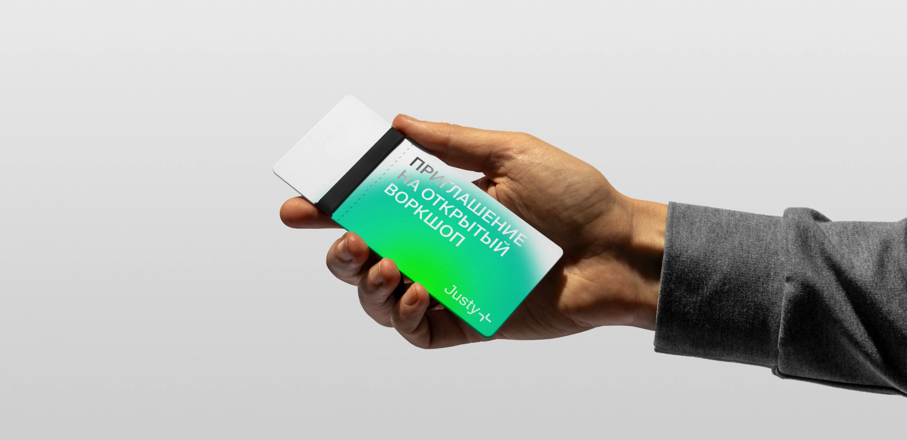

About
Медиа с материалами для дизайнеров и веб-разработчиков, на котором можно найти полезные статьи и ресурсы. Полезно тем, кто только начинает свой путь и тем, кто продолжает его
перейти в медиа
Metaphor
В основе метафоры лежит переосмысление английского слова «design». Среди возможных переводов: создание, проектирование, конструирование, проектирование

При написании кода мы используем те же термины, только в другом контексте. Из этого появляется вопрос, можем ли мы разделять индустрии, которые семантически подразумевают одно и то же? Мы ответили на этот вопрос нет
Создание ассоциируется с чем-то ярким и красочным. Поэтому мы решили использовать сочные градиенты, которые уравновешивает и дополняет современный швейцарский гротеск.
Измнение цвета шрифта при встрече с градиентом относится к идее создания нового, через взаимодействие. Аналогичным образом создается цифровой продукт, объединяя дизайн и код
